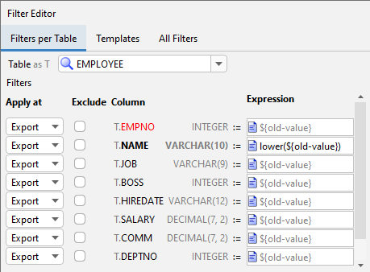
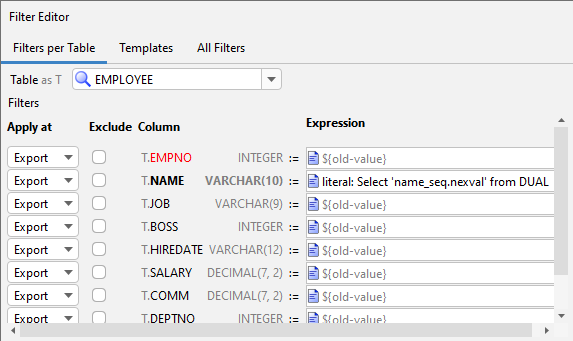
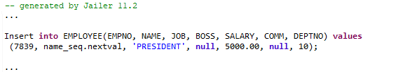
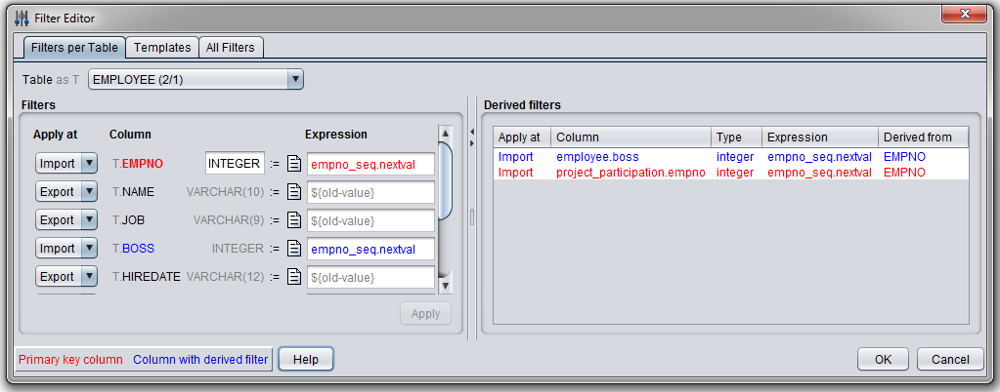
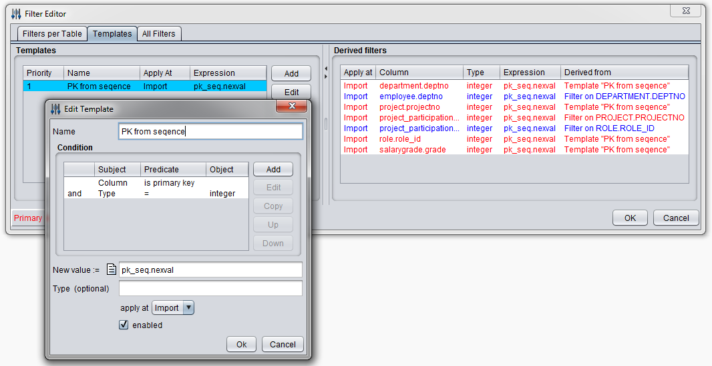

Export filter
An export filter is evaluated during the export phase.The column values are replaced by the result of the expression when the export file is written.
${old-value} is a synonym for the filtered column.
With the filter EMPLOYEE.NAME := lower(${old-value})

... the names of the employees are exported with lowercase letters:

Literal filter
A literal filter is also evaluated during the export phase.The result is written literally to the export file.
In the import phase, it is evaluated as an SQL expression.
To define a literal filter, add the prefix "literal:" to the filter expression.
The filter:

replaces employee names with numbers from a sequence in the target database.

Import filter
An import filter is evaluated during the import phase.Import filters are especially useful for filtering primary key columns.
Filters on primary key columns are automatically applied to the corresponding foreign key columns.
An import filter ensures that a "null" value remains null and that a foreign key value maps to the same
value as the primary key, even if the filter expression is not a deterministic function.
(More precisely, if the filter expressions and types of any two filters are exactly the same for two different columns,
then both filters will map each value to exactly the same target value.)
This filter uses a sequence to generate new EMPNOs during the import phase:

Filter templates
Templates allow defining filters of the same kind for a set of columns that satisfy a given condition.